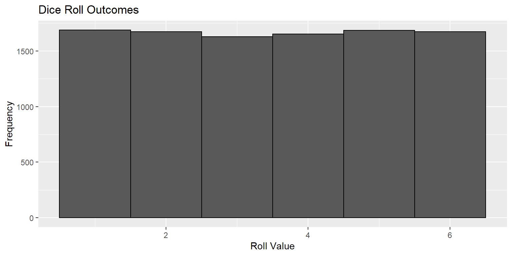

# Dice Simulation
dice = 1:6 # outcomes for dice
n = 10000 # number of samples
set.seed(8675309) # makes this reproducible
rolls = sample(
dice, #samples from dice
n, # takes n samples
replace=TRUE # samples with replacement
)This semester, I took a Real Estate Development class because I thought I would learn about affordable housing. I didn’t learn about affordable housing, but I did learn how capitalists think about land. I’m not an accountant and don’t have much of an interest in the world of commercial real estate valuation, but I enjoyed the final project: whether to purchase a for-sale office building, and what to do with it.
Scoping the Problem
Modeling the problem was not hard. The question at hand is: how much money can you make? We had soft constraints too, such as a desire to have affordable housing in the downtown Pittsburgh neighborhood and a desire to maintain the historic facade of the building to contribute a beautiful aesthetic to the neighborhood. That second part was a lie, we wanted a historic tax credit for money.
This could be a large optimization problem: maximize returns / minimize cost given certain parameters and certain integer decision making variables. Apartments make a certain amount per unit, but also the decision to have a single apartment brings about fixed costs, so it might be best to do zero units or 60 units instead of something in between.
The modeling
The whole thing could be modeled easily in a spreadsheet. I love to hate spreadsheets for lack of reproducibility and transparency of calculations, but it went really well. We had two sheets: a pro forma of the costs, revenue, stable operating income, and value at the end of the project. We had a second sheet with all of our parameters: size of new apartments, lease per square foot of retail, interest rate for our loan, and the different vacancy rates for different types of floors, to give some examples.
Not all of these parameters are known. Some are decisions: we can set apartment prices, we can allocate more or less floor space to retail, and we know what our set land tax rates will be. However, many more parameters are unknown and must be estimates. We used fairly arbitrary numbers: 15% vacancy for retail, 7.5% exit capitalization rate, and a 1-year office fill-out period after renovation. However, these might be better understood as probabilistic values. Our vacancy for retail is estimated to be 15%. What if there’s a recession and we have a 50% vacancy? What if market dynamics change and we have to use an exit cap rate of 9.5%?
The Approach: Monte Carlo Simulation
Approaching an outcome based on a randomly distributed input is what simulation is for. If we have some output \(Y\) that is a function \(Y=u(X)\), we can calculated the expected value of \(Y\) by calculating:
\[E(Y)=E(u(X))\]
By randomly simulating many instances of \(X\) (each instance ) in its distribution, we can simple use averages to find the expected value of \(X\). Selecting \(n\) instances of \(X\), each titled \(x_i\) for \(i \in \{1,2,3,...n\}\), we estimate:
\[ \hat\mu = \frac {u(x_1) + ... + u(x_n)} {n} \approx E(u(x)) = E(Y) \]
So if you have a well-defined relationship between all your randomly-distributed inputs and your output, it can be easier to replicate an instance of that function thousands of times instead of very precisely defining the relationship between the distributions of each input.
An example: dice
If you want to know the expected value of rolling a dice, you could just roll a dice \(n\) times, summing the value for each roll \(x_i\) and dividing by \(n\) to get the final value (which should amount to 3.5).
Now we have a list rolls which contains 10,000 outcomes of rolling a 6-sided die. We can display a histogram of outcomes to see how likely each outcome appears to have been:
Code
library(ggplot2)
ggplot() +
aes(rolls) +
geom_histogram(
color='black',
bins=6
) +
ggtitle('Dice Roll Outcomes') +
xlab('Roll Value') +
ylab('Frequency')
Everything looks in order. We rolled the die 10,000 times, and each outcome appears to have happened. We can take the average outcome for rolls to estimate the expected outcome of rolling a dice:
# calculate mean outcome
mean(rolls)[1] 3.4998That’s pretty close! We got a value of 3.4998, which is only off by 0.0057%. Calculating the expected value of many dice rolls isn’t hard mathematically, but if the function \(Y=u(X)\)is very complex or if \(X\) contains many parameters that are hard to estimate, simulation becomes much easier than precise calculations. That’s where simulation will tie in to our real estate valuation project.
The plan
In the next few posts, I’d like to introduce my real estate project and the very basic financial model behind it. Then, I’d like to expand that model by using Monte Carlo simulation to give better overall estimates for the value of the building. After that’s complete, I’d like to apply simple optimization to the project to see if we can estimate, with known parameters, what plan for the building would prove to make the most money. I don’t know much about real estate, but the project itself is simple enough to model, complicated enough to require advanced technical approaches, and applicable enough to the real world that the modeling will require me to explicitly scope the problems, goals, constraints, and implications of whatever decision is made.
Up next: the pro forma.